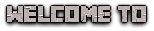

Fantastical Lands is a collection of custom modded content and custom Origins for the Origins Minecraft Mod.
Our team has created 7 custom races and 7 custom classes to compliment or replace the default Origins and enhance your gameplay experience.
We also have a unique currency system as well as a unique way to gain experience for your hard earned money.
For more information on any of these elements please check the corrosponding pages and we hope you enjoy.
A small amount of our content uses other mods like HexCasting to give our Origins more diversity
